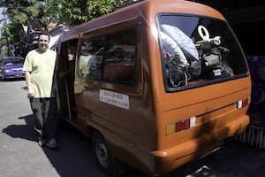
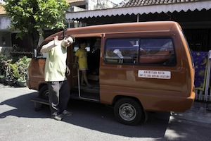
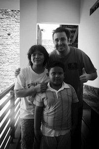
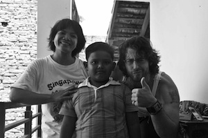

I was thinking of doing one of these here pretty soon anyways, but Stussy asked and so Stussy gets. Sorry it’s been so long. I guess I just lost touch with doing it, and I think that part of the problem is when you stay somewhere long enough just driving to work and walking down the Indonesian streets and the food and everything becomes so second nature it get’s hard to remember to write. To me these things become mundane day in and out so it just doesn’t occur to me to that it’s interesting. Sorry folks.
Here she goes.
Guess what? I am America bound. Some happy, some sad I would guess and that goes for both countries. Next up will be grad school in Vermont. I will be studying teaching English as a second language, hopefully get set up to teach States side and spend a few years some place making crazy money and living and dancing and going on trips and being excited about food again, the Indonesian food has been pretty good but not really exciting. Lots of rice, lots and lots of rice. I have gotten to where I sort of hate rice, and I live in Asia. Maybe A=B, I don’t know.
This past year, it’s been that long, right? Well I have been renting a house with three dudes, one really sweet but slightly slothful British dude who had to split for the UK. He had some scary shit wrong with him that the Indo Doctors were calling tuberculous. He went back to England for the free health care (they can pull it off, what’s the problem guys?) and get this, the best medical minds in England can’t figure it out either. His lungs are filling with fluid ever other week or so and have to be drained. At the start of the year he was tons of fun to sit around and chat with on the couch, but when he started coughing his whole life and outlook and disposition went all to hell. And you can’t blame him either, he was losing tons of weight, not sleeping because of the coughing, and was finally told he couldn’t teach because he may be contagious and everyone was worried about the kids. For the last few months he sat in the house all day, day in day out with nothing going on. Poor guy. That guy was named Adam, I doubt he would read this but if he does FEEL BETTER ADAM! I hope they figure out what the hell is going on with you. I won’t see you again, you won’t be sorted out before I leave so happy trails and thanks for being so cool! Take care bro!
I also live with an LA (very LA) guy named Zac, very cool man who has sort of gotten to be a brother to me. He is also splitting, but he is off to Russia to have adventures there. Very cool dude and a great friend to have. His long time girl friend just went back home so we actually have been hanging out a lot more lately which has been really fun. More Zac later.
We also lived with another guy. That guy moved out a while back.
Well the house was amazing and huge and I had a great little cave in the back next to a garden. I woke to a cool breeze in the morning from the always open window and the standing osculating which must have been running pretty much the whole year. The door of that room opened to the back area with the sun blasting down. In the corner in of two walls in the ceiling near the outside of my door was a birds nest with little chirping baby hachlings, a new addition from a few months back I would guess. The mama and daddy birds were gone most of the day and back just at sundown and I used to call my bird babies little latch key birds. But each morning I would walk from my room to the kitchen door (both of which opened to the outside) and pour a cup of instant coffee and greet my little birdie friends good morning. I liked to think that by the end they were responding to my voice with their little chirps, but really I think they chirped like that all day. Ahhh. Happy little bird friends from Indonesia.
It was a massive place, a palace, a mansion, a crib. In the drive way there was a gate, on the outer street side of which four of five children played at all times. And for the entire time we lived there, we couldn’t come home or leave at anytime outside of school hours without a chorus of gleeful “hello mister, hello mister.” They would jump and wave with a sort of lost glow that kids in the west just don’t seem to have these days. Ear to ear grins, jumping just to say hello. Sometimes I gave them candy, sometimes I was annoyed when their toys were blocking my drive way, but the hello misters always made up for that. I suppose that if you were a little kid and the only people who didn’t look like Indonesians you had ever actually seen all moved in next door it might be a little like living next to space aliens. One of them thought it was really funny to follow me yelling ‘hello hello hello hello hello’ every time he saw me walking down the street. That got old after a few days and went on and on for at least a few months. I figured sooner or later he’d get sick of it and stop if I didn’t encourage him. Nope.
And the street was narrow, and the mosque was at the far end of the drag which was a huge improvement on my house before that which was actually physically attached to one so five times a day and starting at 3 am the call to prayer would come screaming, SCREAMING into my room testing my tolerance of other cultures to the maximum. But now the call to prayer is far enough down the street to be sort of cool, I and the prayer call have sort of become friends. I like the way it just hangs in the air atmospherically like rain or fog, it is ubiquitous and pretty soon a soothing presence that you forget to notice most of the time, like the baby birds living above the kitchen. Most neighborhoods here have a mosque which serves as the meeting place and center of all the surrounding small streets. The music makes everything feel like it is another time and place and it follows you all over the city everywhere you go. The mosque music I like and will miss.
The music I will not miss is the 90’s techno that blasts and attacks you in every bar or shop or mall. It has the high frequency rhythmic computer beep boops that rankle me like a dentists drill. It sounds like a helium balloon being raped by a gang of buzzing biker mosquitoes in an air raid fire alarm test of the emergancy braodcast networks. And I mean everywhere and I mean loud. The techno I will not miss. No sir ree.
Anyways.
We rented the house for the year and had to do so up front. I had a special bank account made for the house which we all put in and took out bill money for and it was a pretty nice deal. But the year ran out this month leaving me with a four month lanyap between moving back to the States and being here so I had to move. The cool guy we lived with was laid up in the UK, the other guy we had lived with had split ages ago due to some sourness I’m sure, be it based on real transgressions or imaginary is beside the point and at this point boring. All this meant was that it was on Zac and I to move Adam’s shit, they still don’t even know what’s wrong with the guy so he wasn’t expected to return to Indonesia any time soon and Zac and I didn’t mind doing it. Adam by the way, has been in Indonesia for somewhere between six and ten years and has the stuff to prove it. Any of the people who still complain (with good reason, I said with good reason, Caroline) this was nowhere near as bad as that was-I was and have no right to complain. But it did take four trips and most of the Sunday shot to hell. The very lovely Intan helped us with her van, mainly because we offered a fridge that had bounced around from expat to expat for so long nobody knew whose it was in the first place. But she also helped because she is totally nice. So we filled up Julian’s guest room with Adam stuff. Adam has always been cool with me and so I didn’t mind helping the guy at all.
The day before we moved Adam we had us a barbeque. I put on a motown compilation of all the number 1s and pulled out the bottle of ‘this is it’ sauce I have been saving from ‘This is It,’ a ghetto joint near the jail on Memorial highway in Atlanta. If you don’t know that place go out there soon, it is past Avandale estates on Memorial near the Mcdonalds just down from the jail. We drank beers, fussed over the fire heat, we slapped big steaks on and fanned the coals. Zany the maid was putting the finishing touches on the laundry when things started up in the late afternoon. Her mother had died earlier that month and was still managing to smile the indefeatable smile which she had before never been without, lately the smile was there but not all the way. Mid month I had given her a little money to help with funeral expenses as is the custom here. It was just a little short of her usual monthly pay that we give her, and my bad Indonesian being what it is she walked away from the conversation thinking it was her salary and that I had stiffed her for a week. This wouldn’t get back to me until Adam’s Indonesian girlfriend confronted me about it. Oh, shit! I ran to the ATM and ran back with her salary and she went for being stiffed to getting almost double her months pay. And I am not talking about a lot of money here, it doesn’t take much to be nice around here it is nice that it is so easy to make someone happy. It is nice to have a little money for once in my life, even though it isn’t enough to get me off wellfare back in the States. Another reason to go do Grad school.
So we offered Zany some kababs at the barbeque, which she ate with apprehension and finally demanded to know in Indonesian “what, no rice?” The idea of rice non-inclusion is not punishable by law but it is certainly odd in Indonesia. I have always suspected that if you went into a place and simply ordered a bowl of white rice it would come with a side of white rice. And that babeque went well into the next morning, I passed out when things got blurry to sounds of whooping raging expats doing their thing with tall boys of Bintang, the only drinkable beer in the country.
The night after we moved Adam Zac and I somehow started talking about the dead we loved and missed over beers, we traded stories and laughed. At the end we got more beer from around the corner and poured a few out for dead hommies and in the end Zac and I both agreed it was better to not be dead, which was a nice way to end that night. I have no idea why or how any of that wound up happening, but it was good somehow. Really good.
The last week Zac and I were lone care takers of the cathedral, the massive common room that had always boomed with tv noise and people hanging around was quiet and somehow simultaneously bigger and smaller. I started packing my stuff the night before, and man, looks like I got a bunch of stuff too. Hmmmm. How am I going to get any of this on a plane? There were years where I needed a uhaul to move my stuff, we figured this time we could cram a taxi full. Zany had a better idea, she had someone who had a truck who was coming by, which was totally cool of her. So we waited the standard hour past when she was supposed to show up the next day. It’s considered rude to arrive less than an hour late in this country, but a free truck is sort of a gift horse deal so we didn’t care.
When she showed up it was in a bemo, or local mini van bus used all over the city for public transpo, they follow routes (for the most part) and cost almost nothing and fill up fast. But this was our very own bemo “neat O”! Her husband drives one and took it for the day which was really cool. We were loading it up and laughing about it when the little girl from across the street that always said ‘hello’ asked if she could come ride with us in the bemo, everyone thought that was really cute and her parents said ok so she jumped into the back with all my boxes. On the way I played peekaboo with her from the front seat, peek a boo being yet another universal thing to all human kids, another of which being all human boys from 6 to 11 think farting is really funny, which I have talked about on this blog before. Just like any kid in the world the peek a boo was good for endless entertainment and I hid behind the seat and jumped out at her with a tongue out and she giggled and made the face back.

Zany’s husband had to ask the local setpam (street security and authority figure in the small area) where the house was, he turned to to be a friend of the guys. He asked me the usual questions, I told him I was from America and he frowned and shook his head. I shrugged a big whatareyagonnado and he laughed and shrugged too. Now I am in good with the setpam and that can’t hurt things. Not sure if it will ever help things but you never know.
We found the house, it is huge and eventually six teachers will live there, but just Zac and I for the moment. The place was a CHAOS of construction guys, scaffolding, drilling, bamboo ladders, WATCH OUT, THAT GUYS CARRYING A HUGE PIPE, dust everywhere, hammering, one guy was chiseling a huge hole in what looked like a perfectly good wall for no reason that was readily apparent, maybe he wanted to be doing something that was loud like his friends were doing, maybe he had felt left out of the chorus and wanted to join in. I felt like I needed a hard hat. The A.Cs were on the wall but there wasn’t an outside unit yet so no dice, no water either by the way. The company housing department lady was there going crazy, the guy who told her everything was ready had been in this house for the past three days and was clearly either lying or just a little silly.
She started telling me she was sorry and I told her it’s a free house and that she shouldn’t worry, if anything I was grateful to not be paying rent. A hell of a scene though, man you should have seen that mess. So the little guy who was in charge of the crew showed up and said two more weeks like that. Ok, I sort of do need water, is there another house anyplace I asked. But I came back that night and in a puff of white smoke it was all ready to go. The dust, the scaffolding, the hole in the wall, it was like a magic trick. I later found out that the gate and driveway would take a few weeks, and that is true. They are out there hammering at the crack of 7 am and sleeping in front of my house from around 10 to who knows. 20 of them, all tuckered out sleeping on the half finished driveway that any self respecting crew of guys could have done in less than two days. And I smile and laugh as I leave for work knowing full well that I might as well be friendly with these fellows, we will be seeing each other plenty I imagine.
A new teacher moved in today from England. Today I took him to get anything he wanted, answered his questions about the job and the school, bought him lunch and a beer. His AC is not working and we tried to get them out to fix it, a guy showed up and said it couldn’t be fixed and he would be back at 7 at night. Zac and I heard that later and we knew that shit wouldn’t happen, so we took him to get a fan. We take good care of each other. Expats are all in it together or they live alone, pure and simple.
But otherwise the house is really nice. My new maid is my old maid, Parmi from the old house. The company wouldn’t hire Zany for teachers house, we did ask. They offered her the job, but the company insists that the maid lives in the house with the teachers and Zany has a son to raise up and wasn’t into moving. No worries, we tried for her.
I still love my former maid Parmi like an Indonesian Grandma, she still finds ways to make me crazy, just like always. Today I caught her fussing at the new teacher in Indonesian that the three of us have too many clothes and are too messy. I explained to her in Indonesian that the new teacher has only been in Indonesian for a few days and can’t understand her, so she opted to fuss at me for a while and I told her to call the company and tell them. She likes to take the meat I put in the fridge and move it to the freezer so that no matter when I had intended on cooking it now it’s got to thaw. She likes to take the couch from where we sit and leave it outside so it gets soaking wet from rain. This is an action which seems to stem from a reaction to some pressing buisness involving the couch which in no way operates in concert with any sort of logical thought process on Parmi’s part. And I just have to laugh and ask her “Kenapa?”I point to the couch. She doesn’t know either. Bless her heart.
Expat lesson number one is roll with it. There is an old guy here named Paul who I have come to think is brilliant. He has a great line for people when they complain about the way things work out here. He listens to your story, some taxi driver did this, some jerk who works in a parking lot did that, and finally he laughs in your face and yells “Did you tell them it’s not how they do things in America?” and then he laughs to the point of loss of breath slamming a hand on the table. And man he’s so right. Imagine being in the States and an Indonesian telling you you are not doing things the Indonesian way. We are guests, and couldn’t (and therefor shouldn’t) as for more gracious or wonderful hosts.
Love the sweet things, the singing kids who want to play peek a boo, the little birds that go tweet tweet, the people who become friends, the passing moments with strangers. And you just fucking roll with the rest of it, and you laugh it all off and it is all an adventure, and you realize along the way that you can never change the way people do things but you can always change your reaction and perception of those things, and when you can learn to laugh it off, and you don’t have to fuss at some random person for some tiny transgression like you do in the States, here you can just laugh with people as they bustle by. And I don’t know if that helps, it could sound like hippie mumbo jumbo from a dude in year three of bagel and cream cheese withdraw, but that is some Asia I have picked up. And I can’t believe I am actually going to leave this place.
Yesterday was Johnboy’s last day at EF Delta Plaza, he has sat at the desk next to mine for the past two years, sandwiched in between myself and Allan Schultz, the two of us are loud and constantly giving the poor guy a hard time, all in good fun. We pretty much make sure that the teachers room is as nonserious a place as possible. It is wise to show up early to get your work done before everyone else comes in or it is a total mad house. Laughing, teasing, joking, it has always felt like a tight nit family in there, honestly one of the coolest places I have ever worked.
Here is one of my all time favorites,
Johboy is heading back to England where he will go back to school. We had a farewell party for him where he said some really nice things about me and Allan and a few others and all of us wished him well. After the diner some of us got to talking about all the teachers that had come and gone, in my three years and others 6, 7, 8, and even 10 years that they had back to school. Arifin started writing names on the board of people who have left Plaza. Pretty soon everyone stopped what they were doing and came over, very soon the board was filled with names and names kept coming. ‘Oh yeah, I remember her’ we would say and with each name came a story. Anna Knox, Crazy Laurah, and Eric were some names of ex Plaza people I missed a lot. And Luke Devine rest well, brother. And not all the people who came were oddballs and misfits, only the ones we remembered, the ones with cool stories. Johnboy was still there but we put his name on the list just the same, it being his last day. For a while we stared at the list silently, all lost in our own memory lanes, all contenplating the time that has passed and keeps seeming to pass, and all the people who have been in and out. I knew less than half the names on the list, teachers who had been here for two years knew almost no one. And maybe in five years or ten Arifin will make the list in the teachers room again and maybe then my name will be on it, and I hope to be remembered as a true oddball even though I will only be remembered by the few still there who remember, although a lot of these guys don’t seem to be going anywhere.
And so the time here ends and my time in Vermont begins, feels like one amazing day ending making way for the next amazing trip. The only bad thing I can do at this point is to stand still too long. Feet don’t fail me now.
But I have friends I will always miss, always. And I will never find a company that is better to me then EF surabaya, and I will never find a bunch of people that are just naturally kinder or better at smiling or or cooler or nicer than the Indonesians. But thing is I got to go. And that’s just the thing. And it sucks and it is amazing and fun but it also sucks.
But Indonesia has been good to me. Thanks Indonesia, I love you. Thanks Surabaya, I love you too. Thanks all the friends I have made here I love you guys. When I leave part of my heart will be in Indo. And I hope it’s not a part I need to live.
ps
Blog believers better believe that after grad school I am once again adventure bound. Thanks Amy, Stussy, and Marcus and everyone else who has been into reading all my mess. Sorry I got lazy. Means a lot that you guys kept up with me though. Now go have some crazy adventures of your own.
love
w
good luck in school, will! i think vermont also deserves a blog. how else you gonna deal with all those liberal, ben & jerry eating hippies?
Thanks for the heads up Will Sanders! Glad to know you are off to more adventures (and I mean next year, because even though it won’t be like Indo or China, grad school will be a sort of adventure!). Things keep rolling along, don’t they?
Did you know that we probably live less than a mile from This is it!, and we have never been? Do we really need to check it out? The billboards and commercials always seemed sort of hokey to me. =)
Vermont is closer than Indonesia, but it is still kind of far. Will you be in Atlanta for a visit before you head that way? Joseph is almost two and I’m pretty sure he doesn’t remember you from your visit in the hospital…
I bet you’re gonna like grad school. Because it is so RAD. I’m thinking of going next year too.
this post as many of them are, is so amazing.
i feel like i was there with you and got tho see your happy little latch key birds!
i miss your face
cant wait to see you!!
lots of love and a safe trip back to the usa
-elenore
hi mr. will… i’ve read your long “journey” about indonesia..so you leave surabaya now?? or i did miss reading…
if you really go..well..its a sad news for me…coz you are one of my daughter faf teacher in EF delta surabaya…and i’ve heard that mr.Allan gonna move to jemursari…oww..too bad..you two are ours faf…
if you can help me,can i get mr.allan contact?? an email,twitter or facebook maybe!? coz in his last day he said a good bye message to me but i didnt see him..
and where are you now mr will?? thanks before..
many love from indonesia